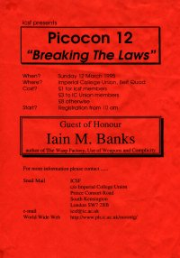

|
Picocon 12 - 1995
(Disillusionment and apathy had meant there was no Picocon in 1994)
| |
Little |
Big |
Videos |
| 10.00am |
Registration Starts
Pictionary |
|
|
| 11.00am |
|
Simon Ings |
Babylon 5 Episode |
| 12.00pm |
Pictionary |
Rose Red |
Rose Red |
| 1.00pm |
|
|
Laputa |
| 2.00pm |
|
Iain Banks |
None |
| 3.00pm |
Panel:Babylon 5 |
Wormholes Talk
Dr. Arley Anderson |
Dark Star |
| 4.00pm |
|
Panel:"When should the Laws of Science be Broken for the Sake of Fiction?" |
|
| 5.00pm |
Book Signings |
Dave Hodges' Auction |
Rose Red |
| 6.00pm |
Discussion on Short Stories
Paul Kincaid |
Film: Koyaanisqqatsi |
The Prisoner: Arrival |
| 7.00pm |
|
|
Babylon 5 episode |
| 8.00pm |
End of Program |
|

|
Bridget Hardcastle and Gidon Moont organised 1995's offering which had Iain (M) Banks and Dr. Arley Anderson as guests. The con had a theme of science literature than fantasy (for a change) and the biggest challenge seems to have been dragging Iain Banks away from the bar.
|